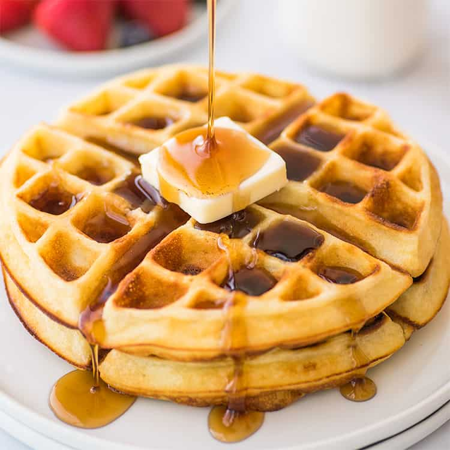

Waffles

Description
Learn how to make hot and fluffy waffles for breakfast.
Ingredients
- 2 eggs
- 2 cups all-purpose flour
- 1 and 3/4 cups milk
- Half a cup of vegetable oil
- 1 tablespoon white sugar
- 4 teaspoons baking powder
- 1/4 teaspoon salt
- 1/2 teaspoon vanilla extract
Instructions
- Preheat waffle iron. Beat eggs in large bowl with hand
beater until fluffy. Beat in flour, milk, vegetable oil,
sugar, baking powder, salt and vanilla, just until smooth.
- Spray preheated waffle iron with non-stick cooking spray.
Pour milk onto hot waffle iron. Cook until golden brown.
Serve hot.